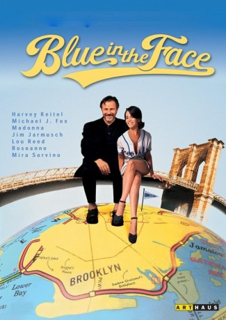

#9071 Blue in the Face - Alles blauer Dunst
Alternativ: Blue in the Face
 
 IMDB-Wertung: 6.7 / 10
IMDB-Wertung: 6.7 / 10  Metascore: 0
Metascore: 0 
Tabakladenbetreiber Auggie (Harvey Keitel) ist Anlaufstelle für alle Probleme seiner Kunden. Hier werden Sorgen abgeladen, Verführungskünste geprobt, psychologische Fragebögen ausgefüllt und letzte Zigaretten geraucht. Doch das kleine Paradies ist in Gefahr, denn Ladenbesitzer Vinnie plant, Auggies Shop an eine Reformkostkette zu verkaufen...
Jahr: 1995
Dauer: 87 Minuten
FSK: 12
Land: USA Studio: MiramaxTonspuren: DD2.0 - ,
Untertitel: Deutsch,
Auflösung: 1080p (1920x1040) Größe: 4802 MB
Genre: Komödie
Regisseur: Paul Auster, Wayne Wang, Harvey Wang
Drehbuch: Paul Auster
Soundtrack:
Darsteller:
- Lou Reed als Man with Strange Glasses
 Michael J. Fox als Pete Maloney
Michael J. Fox als Pete Maloney- Roseanne Barr als Dot
 Mel Gorham als Violet
Mel Gorham als Violet- Jim Jarmusch als Bob
 Lily Tomlin als Waffle Eater
Lily Tomlin als Waffle Eater Jared Harris als Jimmy Rose
Jared Harris als Jimmy Rose Giancarlo Esposito als Tommy Finelli
Giancarlo Esposito als Tommy Finelli Malik Yoba als Watch Man
Malik Yoba als Watch Man José Zúñiga als Jerry
José Zúñiga als Jerry Victor Argo als Vinnie
Victor Argo als Vinnie Stephen Gevedon als Dennis
Stephen Gevedon als Dennis Madonna als Singing Telegram
Madonna als Singing Telegram Mira Sorvino als Young Lady
Mira Sorvino als Young Lady Keith David als Jackie Robinson
Keith David als Jackie Robinson Peggy Gormley als Sue the Waitress
Peggy Gormley als Sue the Waitress Harvey Keitel als Auggie Wren
Harvey Keitel als Auggie Wren- Tatienne Hendricks-Tellefsen als Baby Jackie
 Michael Badalucco als Statistician
Michael Badalucco als Statistician Michelle Hurst als Statistician
Michelle Hurst als Statistician- William Preston als Statistician
 Debra Wilson als Statistician
Debra Wilson als Statistician- RuPaul als Dancer
 Diana Brownstone als Dancer
Diana Brownstone als Dancer- Eileen Galindo als Dancer
- Kyle Larsen als Dancer
 Richard Conte als Pvt. Rivera (archive footage) (uncredited)
Richard Conte als Pvt. Rivera (archive footage) (uncredited)- The John Lurie National Orchestra als Street Band
- Sharif Rashed als Purse Snatcher
- Chief Bey als Brooklyn Resident
- Ian Frazier als Brooklyn Resident
- Sasalina Gambino als Brooklyn Resident
- Robert Jackson als Brooklyn Resident
- Rusty Kanokogi als Brooklyn Resident
- Luc Sante als Brooklyn Resident
- Chelsea Altman als Statistician
- Teodorina Bello als Statistician
- Billy Cherry als Statistician
- Edmund Ikeda als Statistician
- Ahmed Ben Larby als Statistician
- Liz Curtis als Dancer
- James Dickson als Dancer
- Rehanna Ellis als Dancer
- Esteban Fernández als Dancer
- Cotton Green als Dancer
- Nick Kosovich als Dancer
- Gregory Mitchell als Dancer
- Liz Ramos als Dancer
- Ray Rodriguez als Dancer
- Charles LaSalle als Dancer
Datei: X:\1995\Blue in the Face - Alles blauer Dunst (1995, FSK12, 1920x1040).mkv seit 19.07.2018
Festplatte: HD 1992-1995
 Es gibt insgesamt 85 Filme in der Gruppe '1995'
Es gibt insgesamt 85 Filme in der Gruppe '1995'